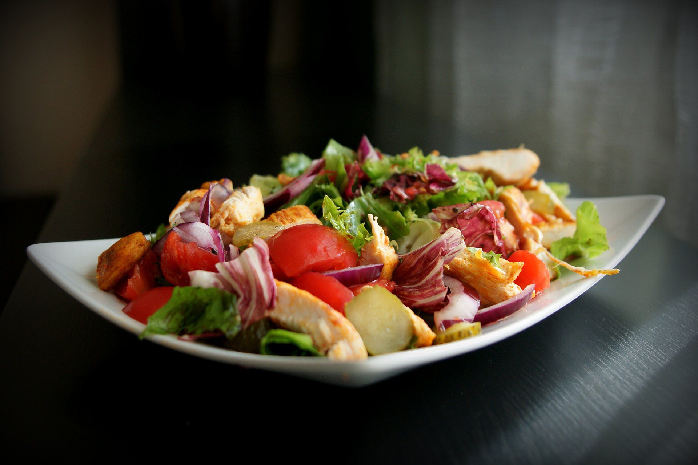

Bean Salad With Celery

Beginner
- 1/2 small onion, minced
- 2 stalks celery, chopped
- 1 (15 ounce) can kidney beans, drained and rinsed
- 1 (15 ounce) can garbanzo beans, drained and rinsed
- 1 (15 ounce) can cut green beans, drained and rinsed
- 1/2 cup olive oil
- 1/4 cup white wine vinegar
- 1/4 cup white sugar
- 1/2 teaspoon salt
- 1/2 teaspoon celery seed
- 1/4 teaspoon ground black pepper
Instructions
- 1. Combine onion, celery, kidney beans, garbanzo beans, and green beans in a mixing bowl. Add olive oil, vinegar, sugar, salt, celery seed, and black pepper to bean mixture; gently stir to coat. Cover bowl and chill completely 2 to 4 hours.